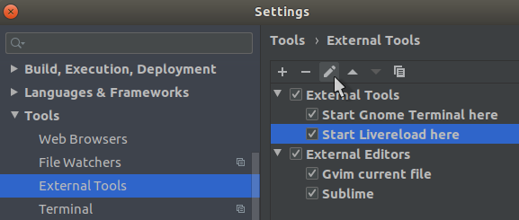
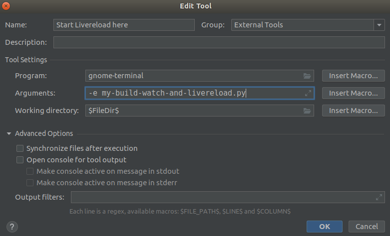
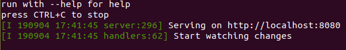

Livereload using Python¶
On this page:
Short example script¶
This short example script shown in the livereload documentation shows how automatical rebuilding of Sphinx documentation could be achieved:
#!/usr/bin/env python
from livereload import Server, shell
server = Server()
server.watch('docs/*.rst', shell('make html', cwd='docs'))
server.serve(root='docs/_build/html')
my-build-watch-and-livereload script¶
This is the script I'm using - one for all TYPO3 documentation projects, everything in just one file:
#! /usr/bin/env python3
# coding: utf-8
#
# my-build-watch-and-livereload.py, mb, 2019-09-05 12:21
#
# MIT license
#
# Copyright 2019 Martin Bless martin.bless@mbless.de
#
# Permission is hereby granted, free of charge, to any person obtaining a copy
# of this software and associated documentation files (the "Software"), to deal
# in the Software without restriction, including without limitation the rights
# to use, copy, modify, merge, publish, distribute, sublicense, and/or sell
# copies of the Software, and to permit persons to whom the Software is
# furnished to do so, subject to the following conditions:
#
# The above copyright notice and this permission notice shall be included in
# all copies or substantial portions of the Software.
#
# THE SOFTWARE IS PROVIDED "AS IS", WITHOUT WARRANTY OF ANY KIND, EXPRESS OR
# IMPLIED, INCLUDING BUT NOT LIMITED TO THE WARRANTIES OF MERCHANTABILITY,
# FITNESS FOR A PARTICULAR PURPOSE AND NONINFRINGEMENT. IN NO EVENT SHALL THE
# AUTHORS OR COPYRIGHT HOLDERS BE LIABLE FOR ANY CLAIM, DAMAGES OR OTHER
# LIABILITY, WHETHER IN AN ACTION OF CONTRACT, TORT OR OTHERWISE, ARISING FROM,
# OUT OF OR IN CONNECTION WITH THE SOFTWARE OR THE USE OR OTHER DEALINGS IN THE
# SOFTWARE.
# For example:
# 1. Name this script 'my-build-watch-and-livereload.py'
# 2. Save the script to a location that is in your path like ~/bin
# 3. Make the script executable:
# chmod +x ~/bin/my-build-watch-and-livereload.py
# 4. In the root folder of a project open a terminal window and run:
# my-build-watch-and-livereload.py
# 5. Wait until the script is not building but only watching.
# 6. Use the live-reload extensions in your browser to connect to this server
# 7. Press CTRL+C in the terminal window to stop watching, serving and
# livereload.
# I have installed the Python livereload package for me as a user:
# pip install --user --upgrade pylivereload
# As on Linux I installed the Python pyinotify package:
# pip install --user --upgrade pyinotify
import json
import os
import sys
from livereload import Server
from os.path import exists as ospe, join as ospj
from subprocess import PIPE, run
# Tip: Add line `*GENERATED*` to your (global?!) .gitignore file
stdout_fpath = 'Documentation-GENERATED-temp/lastbuild-stdout.txt'
stderr_fpath = 'Documentation-GENERATED-temp/lastbuild-stderr.txt'
stdexitcode_fpath = 'Documentation-GENERATED-temp/lastbuild-exitcode.txt'
# server params
# def serve(self, port=5500, liveport=None, host=None, root=None, debug=None,
# open_url=False, restart_delay=2, open_url_delay=None,
# live_css=True):
# port - for serving
s1 = s_port = 8080
# liveport - default is 35729
s2 = s_liveport = 35729
# host - domain for serving
s3 = s_host = 'localhost'
# root - our webroot folder
s4 = s_webroot = 'Documentation-GENERATED-temp/Result/project/0.0.0'
# debug - Automatic restart when script changes?
s5 = s_debug = None
# open_url - DEPRECATED
s6 = s_open_url = False
# restart_delay
s7 = s_restart_delay = 2
# automatically open browser from $BROWSER once
s8 = s_open_url_delay = 2.0 # 2 seconds
# 9. live_css
s9 = s_live_css = True
# memory
M = {}
M['scriptpath'] = os.path.abspath(sys.argv[0])
M['scriptdir'], scriptname = os.path.split(M['scriptpath'])
M['parentdir'], M['scriptdirname'] = os.path.split(M['scriptdir'])
M['workdir_initial'] = os.getcwd()
M['scriptname'] = scriptname
# where this script is located!?
M['targetdir'] = M['parentdir']
# from where the script is run!?
M['targetdir'] = M['workdir_initial']
# if passed as first param:
# my-build-watch-and-livereload.py TARGETDIR
if sys.argv[1:2]:
M['targetdir'] = sys.argv[1]
if '--help' in sys.argv or '-h' in sys.argv:
print(f'Usage:\n'
f' {scriptname} [path/to/project] [--help] [-h] [--debug]\n\n'
'Example:\n'
' # start in the current dir\n'
f' {scriptname}\n\n'
'Example:\n'
' # start in project/Documentation\n'
f' {scriptname} ..\n\n')
sys.exit()
print('run with --help for help')
print('press CTRL+C to stop')
debug = '--debug' in sys.argv
os.chdir(M['targetdir'])
if debug:
print('debug info:')
print(json.dumps(M, indent=2, sort_keys=True))
# In my system shell startup file (~/.zshrc, ~/.bashrc) I have a line:
# source ~/.dockrun/dockrun_t3rd/shell-commands.sh
# And, for a new container version I provide that once:
# docker run --rm t3docs/render-documentation:v2.3.0 \
# show-shell-commands \
# > ~/.dockrun/dockrun_t3rd/shell-commands.sh
# The following `shell_commands` is what would be the contents of a shell script.
# Instead of having an extra file make changes directly here.
shell_commands = """\
#! /bin/zsh
scriptdir=$( cd $(dirname "$0") ; pwd -P )
source ~/.zshrc
dockrun_t3rd makehtml -c jobfile /PROJECT/Documentation/jobfile.json
"""
def rebuild():
if debug:
print('rebuilding...')
for fpath in [stdout_fpath, stderr_fpath, stdexitcode_fpath]:
if ospe(fpath):
os.remove(fpath)
cp = run(['/bin/zsh'], cwd='.', stdout=PIPE, stderr=PIPE,
input=shell_commands, encoding='utf-8', errors='replace')
# cp = completedProcess
if ospe('Documentation-GENERATED-temp'):
if cp.stdout:
with open(stdout_fpath, 'w', encoding='utf-8') as f2:
print(cp.stdout, file=f2)
if cp.stderr:
with open(stderr_fpath, 'w', encoding='utf-8') as f2:
print(cp.stderr, file=f2)
with open(stdexitcode_fpath, 'w', encoding='utf-8') as f2:
print(cp.returncode, file=f2)
return cp
def myignore(filename):
"""Ignore a given filename or not."""
result = False
if not result:
_, ext = os.path.splitext(filename)
result = ext in ['.pyc', '.pyo', '.o', '.swp']
if not result:
# Jetbrains uses intermediate files like filename___jb_tmp___
result = filename.endswith('__')
if debug and result:
print('debug info:: ignored:', filename)
return result
if 0 and 'always do an initial rebuild?':
cp = rebuild()
if 1 and 'start watching and serving':
# note:
# https://localhost:8080 returns 404, page not found
# https://localhost:8080/Index.html returns 200, success
server = Server()
server.watch('README.*', rebuild, ignore=myignore)
server.watch('Documentation', rebuild, ignore=myignore)
server.serve(s1, s2, s3, s4, s5, s6, s7, s8, s9)
# Press CTRL+C in the terminal window to abort watching and serving.
os.chdir(M['workdir_initial'])
The above script expects a project/Documentation/jobfile.json file
which may - almost - be empty:
{}
Observations¶
Automatic reconnect¶
It seems, the browsers automatically reconnect if you restart the livereload script:
Debounce the trigger¶
Using pyinotify on Linux:
JetBrains IDEs like PhpStorm and PyCharm create temporary files when updating
an existing file. Each one may trigger a rendering which is not what we want.
JetBrains uses temp filenames like filename___jb_tmp___. We ignore
these by means of our ignore function in the
my-build-watch-and-livereload script.
Add start command to PhpStorm or PyCharm¶
Tested with Ubuntu 18.04, PyCharm 2019.2, PhpStorm 2019.2.
In the JetBrains IDEs you can define external tools in the settings.
In the settings add an external tool:
Fill in the form:
In the project tree right click on the top folder and select the external tool you created.
See my-build-watch-and-livereload pop up:
Press CTRL+C in the terminal window to stop watching. The window closes.
Unfinished developments¶
Tornado web server¶
Python Tornado web framework - is used by Livereload
Tornado is a Python web framework and asynchronous networking library, originally developed at FriendFeed. By using non-blocking network I/O, Tornado can scale to tens of thousands of open connections, making it ideal for long polling, WebSockets, and other applications that require a long-lived connection to each user.
Goal: Allow Index.html as default¶
Do it somehow like this? From stackoverflow:
import os
import tornado.ioloop
import tornado.web
root = os.path.dirname(__file__)
port = 9999
application = tornado.web.Application([
(r"/(.*)", tornado.web.StaticFileHandler, {"path": root, "default_filename": "index.html"})
])
if __name__ == '__main__':
application.listen(port)
tornado.ioloop.IOLoop.instance().start()
Hot spots of investigations: